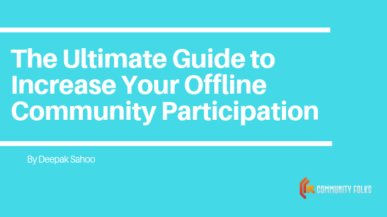
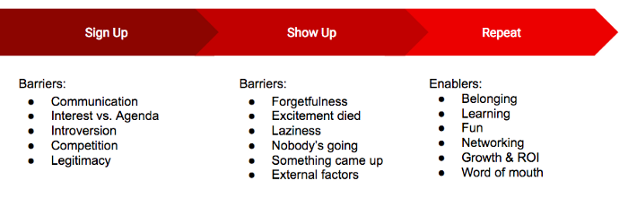
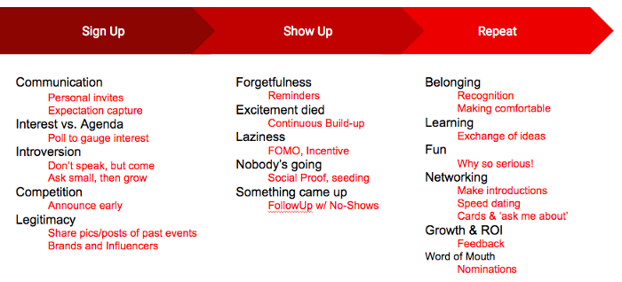

Offline participation: Getting Members to Participate in an Era of Busy Schedules and Distractions
We live in the internet age, where everything online competes with everything offline for our attention. This phenomenon is of special interest to community managers who understand very well the significance of offline interactions within their communities. Meeting at offline events establishes real bonds among members (which are then reinforced online), and also lends a sense of legitimacy to the community.

Ask any CM and they will rant about how difficult it is to achieve offline event participation by members. At Community Folks, we realized the importance of tackling this challenge, and hence set off to brainstorm and come up with a manifesto that helps CMs in improving their offline metrics.
How does one even start addressing this problem? The answer lies in the word ‘problem’, the engineers amongst us realized. We adopted a problem-solving and first-principles approach to model and break the problem down into easily addressable pieces and to then identify solutions to each piece. This article has been structured to serve as a troubleshooting manual for CMs to identify and address their offline participation barriers.
We present to you, the Offline Participation funnel
The funnel captures the 3 most important actions that a CM wants members to perform, and we listed down barriers/enables for each of these actions:

Once we identified these barriers, we harnessed the collective wisdom of our community managers to propose solutions to deal with these barriers:

Detailed Troubleshooting:
Sign Up:
This is when your members come to know about your event and sign up to attend it i.e. commit to set aside time for it. The barriers to this action are:
Communication: Your members didn’t get properly informed about the event. Maybe your announcement was wrongly timed, or didn’t convey the message clearly, or didn’t use the right media/channels, or was simply missed by your members amidst the flood of messages on your forum. Rigorous communication is the solution here — repeated messages on multiple channels. Also, try sending personal invites to your members — this can take a significant effort, but the returns are very high! People like getting personal attention. Use tools like mail-merge to automate personalized messages. Also use this opportunity to gauge what your participants expect from your event, by including a small survey in your invitation.
Interest vs. Agenda: The agenda for your event didn’t match the interests of your members, so they didn’t see value in attending it. This should have been addressed in the communication to your members — a detailed agenda with clear takeaways always helps in setting the expectations right. Also consider running a poll before announcing your event, to see if a majority of your members would be interested in the theme of your event. As a CM it is your responsibility to know your community’s interests and preferences inside-out.
Introversion: Perhaps your members are interested, but are too shy to attend an event and face the awkwardness of human interactions. While there’s little you can do to solve for shyness, there are some workarounds you could try. Some of our CMs have seen good results in encouraging passive participation, where there is no compulsion on members to participate actively if they show up. They will at least learn something by observing others. Incrementalism also works here. A shy member who starts small, with passive participation, will gradually grow more comfortable with other members and become an active contributor.
Competition: Do your event’s time and venue compete for priority with some other event or activity that your members would be interested in or committed to? You should prevent this in the planning stage by avoiding clashes with other events, and by announcing your event as early as possible.
Legitimacy: Is your event perceived as significantly valuable to attend? Does it have a strong identity with a track record of good experiences in the past? This could also be a communication problem. You should circulate content (pictures, videos, blogs etc.) from previous events especially among new members, to build hype and legitimacy about the value of your event. Getting brands to support your event also goes a long way and is win-win for all stakeholders.
Show Up:Now that you’ve ensured that your members have promised to attend your event, you need to ensure that they actually show up on D-Day! Barriers to show up include:
Forgetfulness: Members are busy, and you must embrace that. Your event is not the only thing on their minds, and they are bound to forget that they even signed up. The solution, as mentioned above, is frequent rigorous communication on multiple channels. Try setting up automatic reminders 1 week before, 1 day before, and on the day of your event.
Excitement died: Perhaps your members were interested about your event when they signed up, but it’s been a while and their excitement has faded. This is also a communication problem. You should run a build-up campaign leading up to your event, with regular content posts to keep the excitement high.
Laziness: There’s a barrier of activation energy to do any non-trivial task. If your members mostly interact online from the comforts of their rooms, it is going to take a very significant force of motivation to get them out, battle the traffic and attend your event. A lot of times, members flake out at the last minute due to inertia. Members need a strong incentive to get off their backsides. You can provide this incentive by announcing gifts/goodies for those who show-up, possibly sponsored by your partner brands. If not goodies, try finding out what your members value, and create that Fear of Missing Out (FOMO) among them.
Nobody’s going: This is a subset of herd mentality. Humans are tribal, we seek social validation for our actions. If your members don’t see important people or their friends attending an event, they could get easily demotivated to show up. The solution is simple — give them social proof! Show them who’s attending (especially important members). Also, you can use a trick that CMs usually employ: the first few sign-ups should be seeded by asking your friends, so when your members open your sign-up page, they don’t see an empty list.
Something came up: Sometimes, members do face unforeseen challenges or personal emergencies. However, if you know people, you know that in most cases the reason for no-show could actually be any of the above factors, disguised as an emergency. You should always follow up with no-shows and tell them how awesome your event was! Make them feel bad for missing your event, but at the same time, encourage them to attend the next one!
External factors: These are factors beyond human control, E.g. heavy rains, disruptions in the city, calamities etc. There’s nothing you can do about this. In such situations, it’s best to call off the event and re-plan for another day. Ensure to communicate effectively about the cancellation to all members!
Repeat:The most effective way to ensure a good crowd in your offline events is to build an army of active members who look forward to every event. Here are the things you should do to ensure repeated participation from people who have attended your event once.
belonging: Communities thrive on belonging. If you are able to create a sense of belonging among members at your events, then the belonging becomes an end in itself, drawing your members to your events like moths to a flame. As a CM you should ensure to make every attendee feels welcome and comfortable at your event. Go ahead and introduce first-timers to the gang, also recognize old timers and prominent members. Focus on helping members find things that are common among themselves, that helps in bonding.
Learning: Are attendees learning something new at your event? Is it helping them become better versions of themselves? By facilitating an atmosphere of information exchange and mutual mentoring, you can ensure that your members will always look forward to attending and learn at your events.
Fun: All work and no play. Events tend to get monotonous, so breaks in between are a must! Use these breaks to refresh attendees with a little fun and games. Additionally, you could make it about inside jokes, and reinforce your own micro-culture. Most CMs agree that the fun and games tend to create more engagement and emotional memories, and tend to get recalled for a long time after the event.
Networking: Offline events are great for networking. But most people are too shy to take the initiative and walk up to someone. As a CM, you can significantly reduce friction here by making quick introductions between relevant people, maybe even having a round of speed-dating in between the event to ensure collisions between people. One good thing to do is to have people wear name-cards along with a few things that they can talk about, to serve as conversation starters.